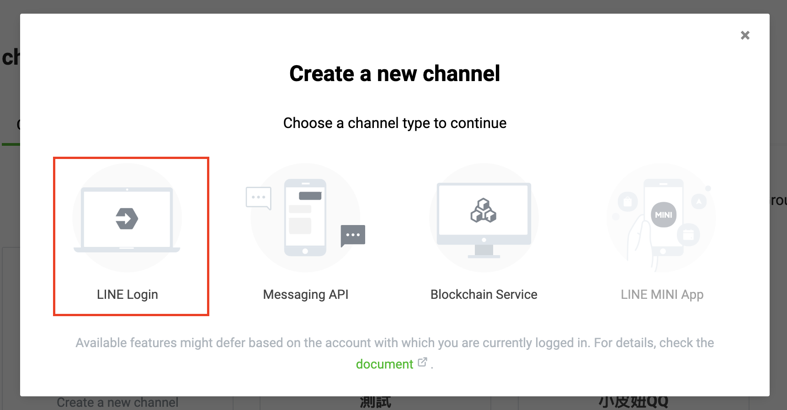
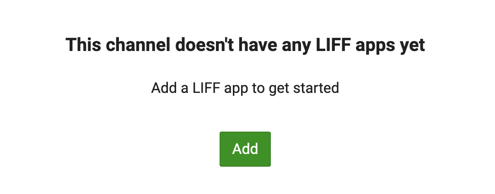
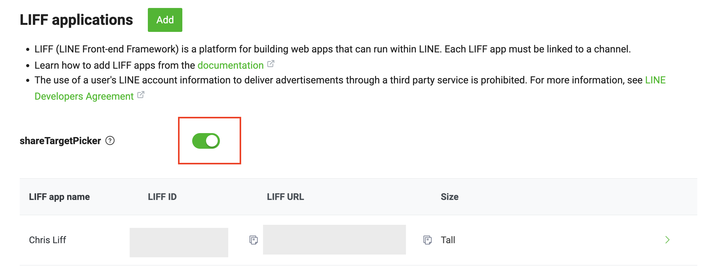
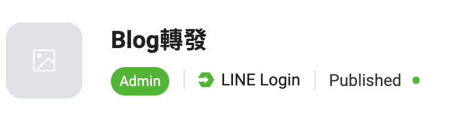
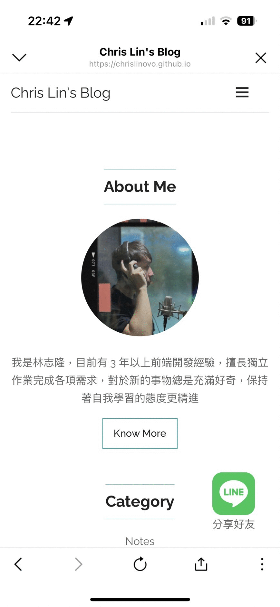

Line LIFF ShareTargetPicker
前言
之前在前公司有用到 Line shareTargetPicker API 的應用，用來發送訪客 QR code 給 Line 好友，這邊做一個簡單 Demo，單純轉發當前 URL 給好友。
Line LIFF ShareTargetPicker 教學
步驟 1：進到 developerse官網 建立 channel
選擇 Products，請選擇LINE Login，然後Create a new channel

步驟 2：建立 LIFF
這時點選頁籤LIFF按下Add。

以下說明 LIFF 表單
-
Size：這一項有三個值 Full、Tall、Compact，說明 LINE 打開 LIFF 時，他的大小要多大。 要注意的是，分享的按鈕只會在「Full」這個 Size 出現。
-
Endpoint URL ：使用者點擊了 LIFF 的連結，實際上 LIFF 是開啟了哪個頁面。
-
Scopes ：指的是我們想要取哪些資料，「chat_message.write」，這項是如果要用到主動幫使用者發訊息的 sendMessages 函式時，這邊就必須打勾，不然 sendMessages 就無法使用。
-
Add friend option ：當使用者要登入我們建立的 LIFF 時，要怎麼推薦他加入我們的 LINE。
-
Scan QR ：指要不要使用 LIFF 的打開 QR code 掃描器功能。
步驟 3：建立 LIFF 完成
建立完成後記得勾選shareTargetPicker，這項功能是主動讓使用者發送我們指定的訊息給他的好友。
LIFF ID這個要先記起來，之後寫 JS 用到。

步驟 4：LIFF 轉成公開
進到 LINE Developers 的後台，進到我們創建的 LIFF，會有一個Developing的按鈕，需要按下Publish就會轉成公開

程式碼參考範例
Demo 影片

結語
主要是可以讓使用者用 Line 就可以快速分享該頁面。